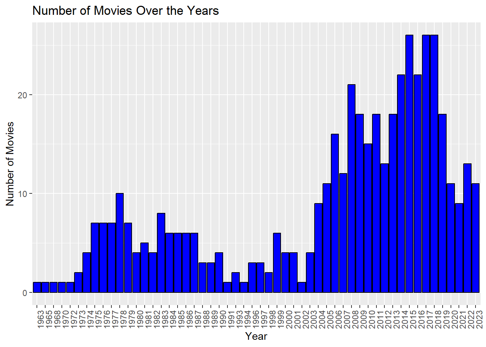
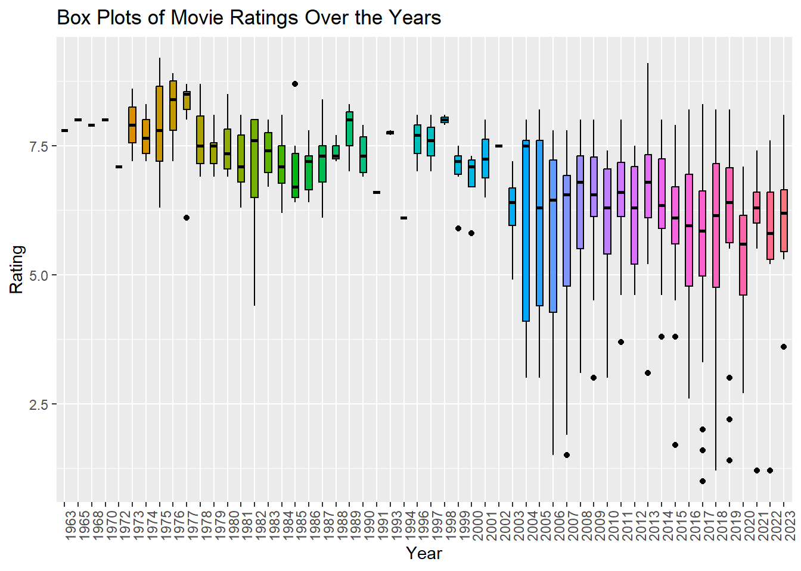

The plot clearly show that ratings decrease over the years.
Code
ggplot(movie_data, aes(x =factor(Year))) +geom_bar(fill ="blue", color ="black") +labs(x ="Year", y ="Number of Movies") +ggtitle("Number of Movies Over the Years") +theme(legend.position ="none",axis.text.x =element_text(angle =90) )

Code
movie_data$Year <-as.factor(movie_data$Year)ggplot(movie_data, aes(x = Year, y = Rating, fill =factor(Year))) +geom_boxplot(color ="black",width =0.5) +labs(x ="Year", y ="Rating") +ggtitle("Box Plots of Movie Ratings Over the Years") +theme(legend.position ="none",axis.text.x =element_text(angle =90) )

Part D
Code
corr <-cor(movie_data$Votes, movie_data$Rating)cat("Correlation between Votes and Ratings:", corr)
Correlation between Votes and Ratings: 0.1311088
The correlation between votes and ratings is weak.
Part E
Code
corr <-cor(movie_data$Duration, movie_data$Rating)cat("Correlation between Votes and Ratings:", corr)
Correlation between Votes and Ratings: 0.03331057
There is no correlation between duration and ratings.
(4) Turkish Movies in Top 1000
Code
movie_data1 = movie_dataurl <-c("https://m.imdb.com/search/title/?title_type=feature&sort=release_date,asc&num_votes=2500,&groups=top_1000&country_of_origin=TR&count=250")data_html <-read_html(url)title_names <- data_html |>html_nodes('.ipc-title__text')title_names <-html_text(title_names)title_names <-tail(head(title_names,-1),-1)title_names <-str_split(title_names, " ", n=2)title_names <-unlist(lapply(title_names, function(x) {x[2]}))year <- data_html |>html_nodes(".dli-title-metadata-item:nth-child(1)")year <-as.numeric(html_text(year))top_movies <-data.frame(Title = title_names,Year = year )kable ( top_movies,caption ="Turkish Movies in the Top 1000",)
Turkish Movies in the Top 1000
Title
Year
Eskiya
1996
Her Sey Çok Güzel Olacak
1998
Vizontele
2001
G.O.R.A.
2004
Babam ve Oglum
2005
Nefes: Vatan Sagolsun
2009
Bir Zamanlar Anadolu’da
2011
Kis Uykusu
2014
Ayla: The Daughter of War
2017
Ahlat Agaci
2018
Yedinci Kogustaki Mucize
2019
Code
movie_data <- movie_data %>%mutate(Year =as.numeric(Year))top_movies <- top_movies %>%mutate(Year =as.numeric(Year))movies_top2 <- movies %>%inner_join(top_movies, by =c("Title", "Year")) %>%arrange(desc(Rating))kable( movies_top2,caption ="Turkish Movies in the Top 1000 Full Table",col.names =c("Title", "Year", "Duration", "Rating", "Votes"))
Turkish Movies in the Top 1000 Full Table
Title
Year
Duration
Rating
Votes
Ayla: The Daughter of War
2017
125
8.3
43005
Yedinci Kogustaki Mucize
2019
132
8.2
54200
Babam ve Oglum
2005
108
8.2
91054
Eskiya
1996
128
8.1
71707
Her Sey Çok Güzel Olacak
1998
107
8.1
27129
Kis Uykusu
2014
196
8.0
54664
Ahlat Agaci
2018
188
8.0
27029
Vizontele
2001
110
8.0
38412
G.O.R.A.
2004
127
8.0
66042
Nefes: Vatan Sagolsun
2009
128
8.0
35032
Bir Zamanlar Anadolu’da
2011
157
7.8
49380
Code
movie_data1 <-arrange(movie_data1, desc(Rating))kable(head(movie_data1, 11),caption ="Turkish Movies in the Top 11",col.names =c("Title", "Year", "Duration", "Rating", "Votes"))
Turkish Movies in the Top 11
Title
Year
Duration
Rating
Votes
Hababam Sinifi
1975
87
9.2
42520
CM101MMXI Fundamentals
2013
139
9.1
47001
Hababam Sinifi Sinifta Kaldi
1975
95
8.9
24372
Tosun Pasa
1976
90
8.9
24331
Süt Kardesler
1976
80
8.8
20891
Hababam Sinifi Uyaniyor
1976
94
8.7
20642
Saban Oglu Saban
1977
90
8.7
18537
Neseli Günler
1978
95
8.7
11811
Kibar Feyzo
1978
83
8.7
17127
Zügürt Aga
1985
101
8.7
16141
Canim Kardesim
1973
85
8.6
10099
Upon examining the table, it becomes apparent that the initial 11 highest-rated movies differ from those listed in our original data frame. A notable distinction lies in the release years of these films, with a conspicuous absence of older productions in the TOP 1000 IMDB list. It is probable that the inclusion criteria for this list prioritize movies released after a specific year.
---title: "Assignment 2"format: html: code-fold: true code-tools: true---# (1) Getting URL```{r}#| code-fold: trueurl <-c("https://m.imdb.com/search/title/?title_type=feature&release_date=2010-01-01,2023-12-31&sort=release_date,asc&num_votes=2500,&country_of_origin=TR&count=250","https://m.imdb.com/search/title/?title_type=feature&release_date=,2009-12-31&sort=release_date,asc&num_votes=2500,&country_of_origin=TR&count=250")```# (2) Preparing of DataFrame```{r}#| code-fold: true#| output: falselibrary(tidyverse)library(rvest)library(stringr)library(knitr)convert_time <-function(time_str) { hours <-0 minutes <-0if (grepl("h", time_str)) { time_components <-strsplit(time_str, "h|m")[[1]]if (length(time_components) >=1) { hours <-as.numeric(time_components[1]) }if (length(time_components) >=2) { minutes <-as.numeric(time_components[2]) } } else { minutes <-as.numeric(gsub("m", "", time_str)) } total_minutes <- hours *60+ minutesreturn(total_minutes)}#PART URL1data_html <-read_html(url[1])title_names1 <- data_html |>html_nodes('.ipc-title__text')title_names1 <-html_text(title_names1)title_names1 <-tail(head(title_names1,-1),-1)title_names1 <-str_split(title_names1, " ", n=2)title_names1 <-unlist(lapply(title_names1, function(x) {x[2]}))year1 <- data_html |>html_nodes(".dli-title-metadata-item:nth-child(1)")year1 <-as.numeric(html_text(year1))duration1 <- data_html |>html_nodes((".dli-title-metadata-item:nth-child(2)"))duration1 <-html_text(duration1)duration1 <-unlist(lapply(duration1, convert_time))rating1 <- data_html |>html_nodes(".ratingGroup--imdb-rating")rating1 <-html_text(rating1)rating1 <-as.numeric(str_extract(rating1, "\\d+\\.\\d+"))votes1 <- data_html |>html_nodes(".kRnqtn")votes1 <-html_text(votes1)votes1 <-as.numeric(gsub("\\D", "", votes1))#PART URL2data_html <-read_html(url[2])title_names2 <- data_html |>html_nodes('.ipc-title__text')title_names2 <-html_text(title_names2)title_names2 <-tail(head(title_names2,-1),-1)title_names2 <-str_split(title_names2, " ", n=2)title_names2 <-unlist(lapply(title_names2, function(x) {x[2]}))year2 <- data_html |>html_nodes(".dli-title-metadata-item:nth-child(1)")year2 <-as.numeric(html_text(year2))duration2 <- data_html |>html_nodes((".dli-title-metadata-item:nth-child(2)"))duration2 <-html_text(duration2)duration2 <-unlist(lapply(duration2, convert_time))rating2 <- data_html |>html_nodes(".ratingGroup--imdb-rating")rating2 <-html_text(rating2)rating2 <-as.numeric(str_extract(rating2, "\\d+\\.\\d+"))votes2 <- data_html |>html_nodes(".kRnqtn")votes2 <-html_text(votes2)votes2 <-as.numeric(gsub("\\D", "", votes2))Title <-c(title_names1,title_names2)Year <-c(year1,year2)Duration <-c(duration1,duration2)Rating <-c(rating1,rating2)Votes <-c(votes1,votes2)movie_data <-data.frame(Title = Title,Year = Year,Duration = Duration,Rating = Rating,Votes = Votes)```# (3) Analytics of Movies## Part A```{r}#| code-fold: truemovies <- movie_data %>%arrange(desc(Rating))```Top 5 movies based on ratings are shown below.I think it wouldn't be wrong to say that whatever exists exists in the past.```{r}#| code-fold: truekable( movies %>%head(5),caption ="Top 5 Movies",col.names =c("Title", "Year", "Duration", "Rating", "Votes"))```The bottom 5 is shown below.The new ones are obvious```{r}#| code-fold: truekable( movies %>%tail(5),caption ="Bottom 5 Movies",col.names =c("Title", "Year", "Duration", "Rating", "Votes"))```## Part B```{r}#| code-fold: truekable( movie_data %>%filter(Title =="Ölümlü Dünya"| Title =="Yedinci Kogustaki Mucize"| Title =="Dag II"),caption ="My Best Three",col.names =c("Title", "Year", "Duration", "Rating", "Votes"))```## Part C```{r}#| code-fold: truemovie_data %>%group_by(Year) %>%summarize(yearly_average =mean(Rating)) %>%ggplot(aes(x = Year, y = yearly_average)) +geom_point() +ggtitle("Yearly Rating Averages")```The plot clearly show that ratings decrease over the years.```{r}#| code-fold: trueggplot(movie_data, aes(x =factor(Year))) +geom_bar(fill ="blue", color ="black") +labs(x ="Year", y ="Number of Movies") +ggtitle("Number of Movies Over the Years") +theme(legend.position ="none",axis.text.x =element_text(angle =90) )``````{r}#| code-fold: truemovie_data$Year <-as.factor(movie_data$Year)ggplot(movie_data, aes(x = Year, y = Rating, fill =factor(Year))) +geom_boxplot(color ="black",width =0.5) +labs(x ="Year", y ="Rating") +ggtitle("Box Plots of Movie Ratings Over the Years") +theme(legend.position ="none",axis.text.x =element_text(angle =90) )```## Part D```{r}#| code-fold: truecorr <-cor(movie_data$Votes, movie_data$Rating)cat("Correlation between Votes and Ratings:", corr)```The correlation between votes and ratings is weak.## Part E```{r}#| code-fold: truecorr <-cor(movie_data$Duration, movie_data$Rating)cat("Correlation between Votes and Ratings:", corr)```There is no correlation between duration and ratings.# (4) Turkish Movies in Top 1000```{r}#| code-fold: truemovie_data1 = movie_dataurl <-c("https://m.imdb.com/search/title/?title_type=feature&sort=release_date,asc&num_votes=2500,&groups=top_1000&country_of_origin=TR&count=250")data_html <-read_html(url)title_names <- data_html |>html_nodes('.ipc-title__text')title_names <-html_text(title_names)title_names <-tail(head(title_names,-1),-1)title_names <-str_split(title_names, " ", n=2)title_names <-unlist(lapply(title_names, function(x) {x[2]}))year <- data_html |>html_nodes(".dli-title-metadata-item:nth-child(1)")year <-as.numeric(html_text(year))top_movies <-data.frame(Title = title_names,Year = year )kable ( top_movies,caption ="Turkish Movies in the Top 1000",)``````{r}#| code-fold: truemovie_data <- movie_data %>%mutate(Year =as.numeric(Year))top_movies <- top_movies %>%mutate(Year =as.numeric(Year))movies_top2 <- movies %>%inner_join(top_movies, by =c("Title", "Year")) %>%arrange(desc(Rating))kable( movies_top2,caption ="Turkish Movies in the Top 1000 Full Table",col.names =c("Title", "Year", "Duration", "Rating", "Votes"))``````{r}#| code-fold: truemovie_data1 <-arrange(movie_data1, desc(Rating))kable(head(movie_data1, 11),caption ="Turkish Movies in the Top 11",col.names =c("Title", "Year", "Duration", "Rating", "Votes"))```Upon examining the table, it becomes apparent that the initial 11 highest-rated movies differ from those listed in our original data frame. A notable distinction lies in the release years of these films, with a conspicuous absence of older productions in the TOP 1000 IMDB list. It is probable that the inclusion criteria for this list prioritize movies released after a specific year.